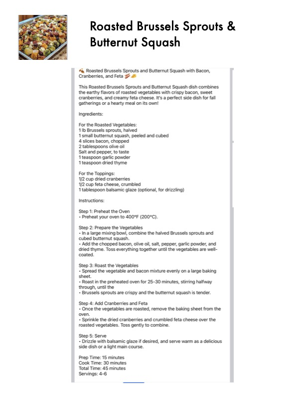

Roasted Brussels Sprouts &

Original cookbook page 701
Ingredients
- For the Roasted Vegetables:
- 1b Brussels sprouts, halved
- 1 small butternut squash, peeled and cubed
- 4slices bacon, chopped
- 2 tablespoons olive oil
- Salt and pepper, to taste
- 1 teaspoon garlic powder
- 1 teaspoon dried thyme
- For the Toppings:
- 1/2 cup dried cranberries
- 1/2 cup feta cheese, crumbled
- 1 tablespoon balsamic glaze (optional, for drizzling)
Instructions
- Preheat the Oven + Preheat your oven to 400°F (200°C). Step 2: Prepare the Vegetables + Ina large mixing bowl, combine the halved Brussels sprouts and cubed butternut squash. + Add the chopped bacon, olive oil, salt, pepper, garlic powder, and dried thyme. Toss everything together until the vegetables are well- coated. Step 3: Roast the Vegetables + Spread the vegetable and bacon mixture evenly on a large baking sheet. + Roast in the preheated oven for 25-30 minutes, stirring halfway through, until the + Brussels sprouts are crispy and the butternut squash is tender. Step 4: Add Cranberries and Feta + Once the vegetables are roasted, remove the baking sheet from the oven. + Sprinkle the dried cranberries and crumbled feta cheese over the roasted vegetables. Toss gently to combine. Step 5: Serve + Drizzle with balsamic glaze if desired, and serve warm as a delicious side dish or a light main course.
Recipe #701 from collection